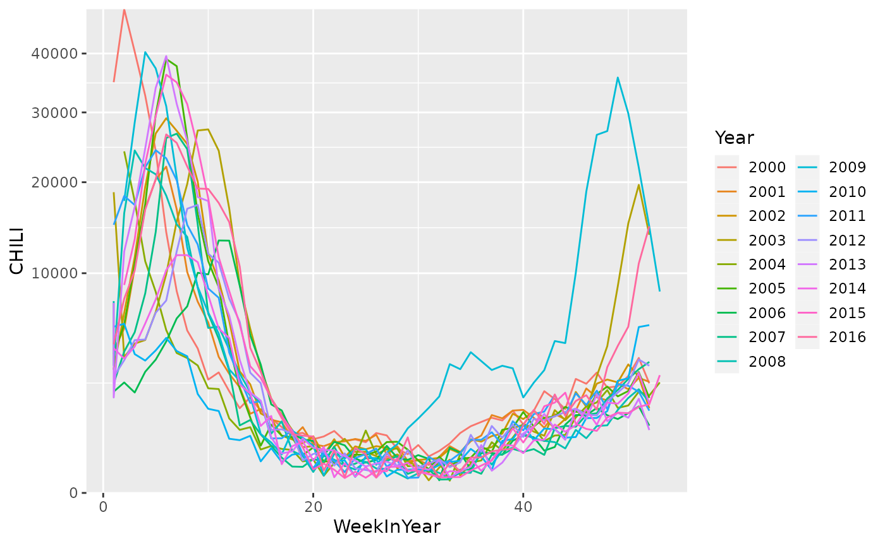

library("HIDDA.forecasting")
library("ggplot2")
source("setup.R", local = TRUE) # define TRAIN, TEST and OWA periodsWe will compute one-week-ahead forecasts for the last 213 weeks (starting from the vertical dashed line in the plot below), as well as 30-week-ahead forecasts for the last 4 seasons (highlighted in the plot below).
autoplot(CHILI) +
labs(x = "Time (week)", y = "ILI counts in Switzerland") +
geom_vline(xintercept = index(CHILI)[min(unlist(TEST))], lty = 2) +
geom_rect(aes(xmin=xmin, xmax=xmax, ymin=0, ymax=Inf),
data=data.frame(xmin=index(CHILI)[sapply(TEST, min)],
xmax=index(CHILI)[sapply(TEST, max)]),
inherit.aes=FALSE, alpha=0.3) +
scale_y_sqrt(expand = c(0,0), limits = c(0,NA))
CHILIdat <- within(fortify(CHILI), {
Year = as.factor(strftime(Index, "%Y"))
DayInYear = as.integer(strftime(Index, "%j"))
WeekInYear = as.integer(strftime(Index, "%V"))
})
## ggplot(CHILIdat, aes(x = DayInYear, y = CHILI, col = Year)) + geom_line()
ggplot(CHILIdat, aes(x = WeekInYear, y = CHILI, col = Year)) + geom_line() +
scale_y_sqrt(expand = c(0,0), limits = c(0,NA)) +
guides(col = guide_legend(ncol = 2)) #+ theme(legend.position = "bottom")